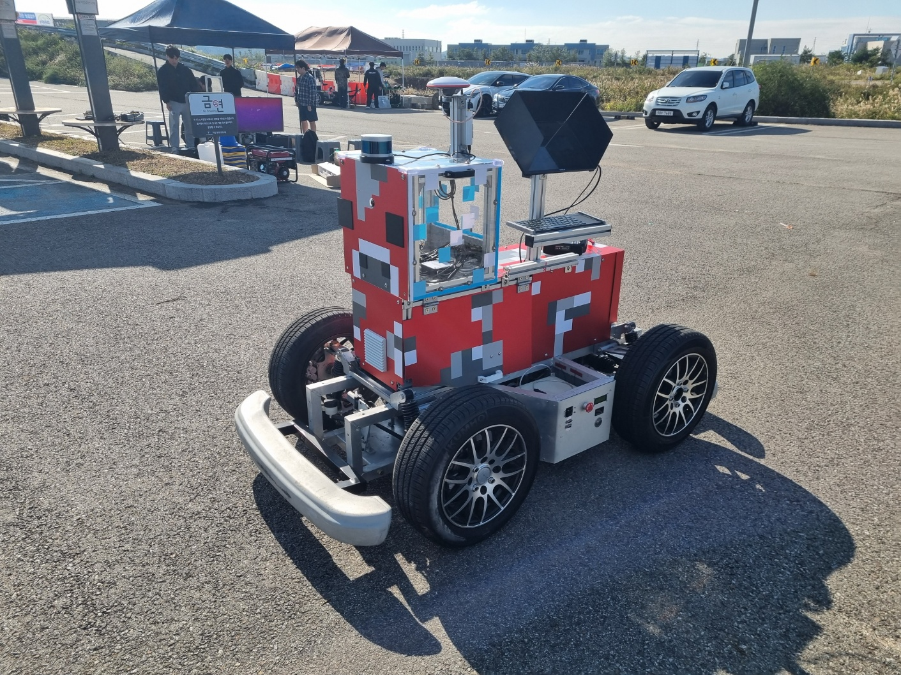
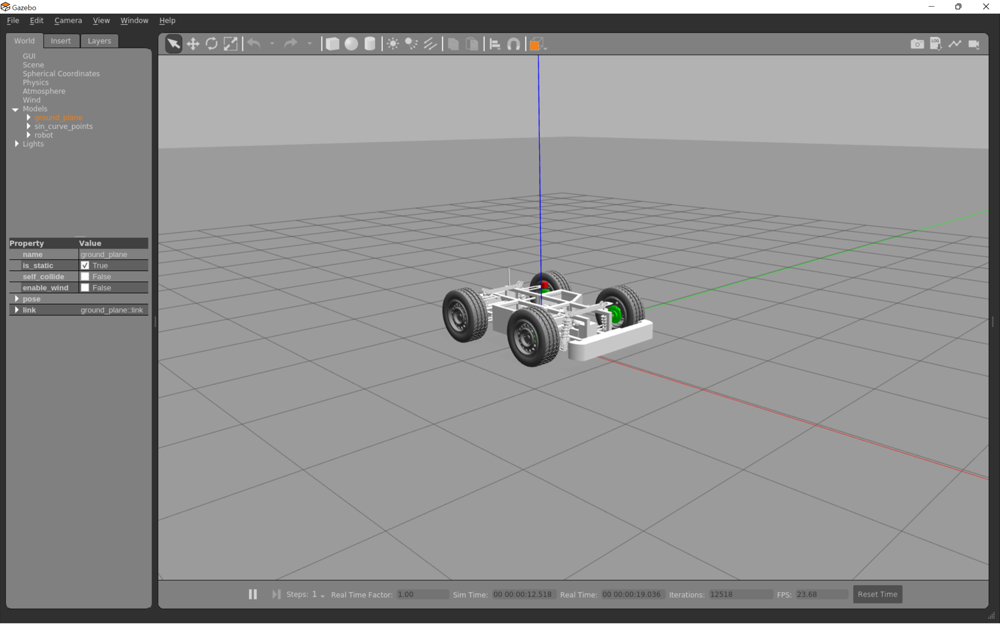

프로젝트 수행 기간 2024, 참여 기간 2024, 2024 대학생 창작 모빌리티 경진대회 (Team Miracle)
Overview
정밀한 자율주행 경로 추종을 위해 PID 제어 및 Stanley 기법을 구현한 UGV 자율주행 시스템을 개발하고, LiDAR–IMU 기반 SLAM을 활용하여 음영구역 주행, 배달, 주차 등의 미션을 수행하기 위해 robust localization, lane detection, path planning 알고리즘을 구축한 프로젝트입니다.
LiDAR–IMU 기반 SLAM으로 GPS 음영구역에서도 견고한 위치추정을 수행하고, PID 속도/조향 제어와 Stanley 횡방향 제어를 적용해 곡선/직선 구간에서 정밀한 경로 추종을 달성하는 것을 목표로 했습니다.

센서를 탑재한 ERP42 UGV 자율주행 플랫폼

Gazebo 시뮬레이션 환경에서의 ERP42 경로 추종 검증
My Role
01 / Stanley Method 경로 추종
Gazebo 시뮬레이션 환경에 주행 경로(path) 구성
ERP42 차량을 모델링하여 시뮬레이션 상에서 Stanley method 경로 추종 알고리즘 구현
횡방향/헤딩 오차를 보정하는 Stanley 조향 제어로 경로 추종 정확도 확보
02 / PID 제어기 설계 (종방향 속도 제어)
차량에 특정 입력값을 주고 직선 주행하여 속도 응답 데이터 취득
EMA로 필터링 후 전달함수를 수학적으로 모델링, 근궤적(root locus) 기법으로 적합한 PID Gain 산출
튜닝 우선순위 — ① 정착시간 단축, ② 안정시간 단축(정속 유지), ③ 오버슈트 감소(관성 고려해 후순위)
03 / Localization (Global Map)
대회 현장을 사전에 global mapping하여 해당 맵 기반 localization 시도
대회 당일 구조물 배치가 크게 변경되어 ICP 정합이 실패
환경 변화에 취약한 맵 기반 접근의 한계를 확인 → Feature 기반 또는 보다 robust한 localization 기법 고안 필요